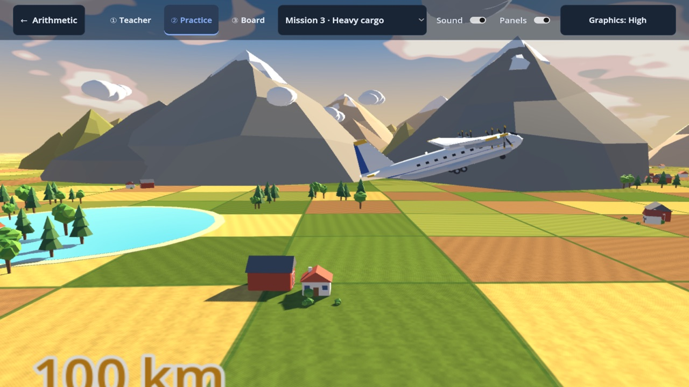
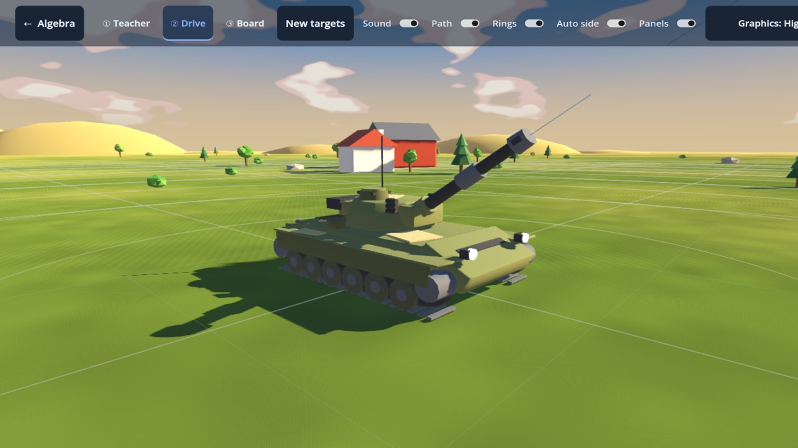
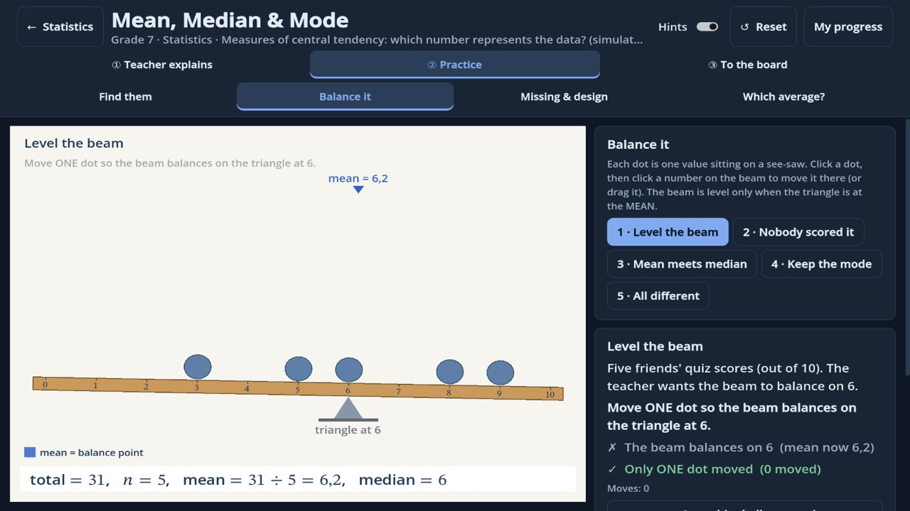
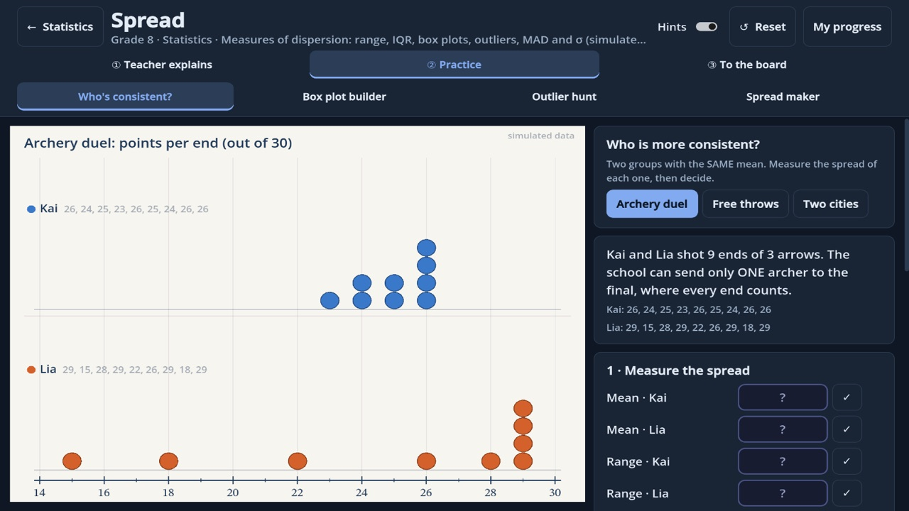
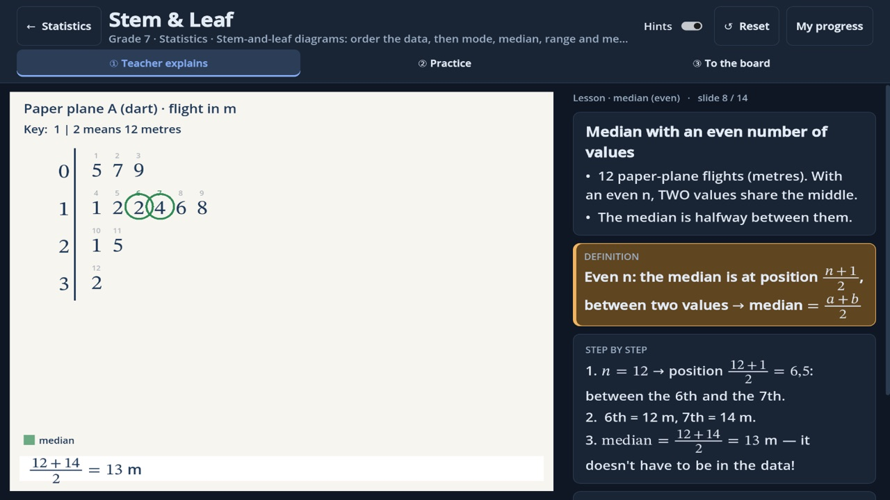
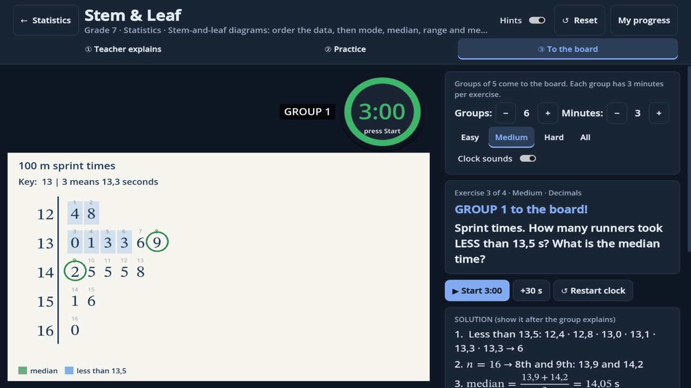
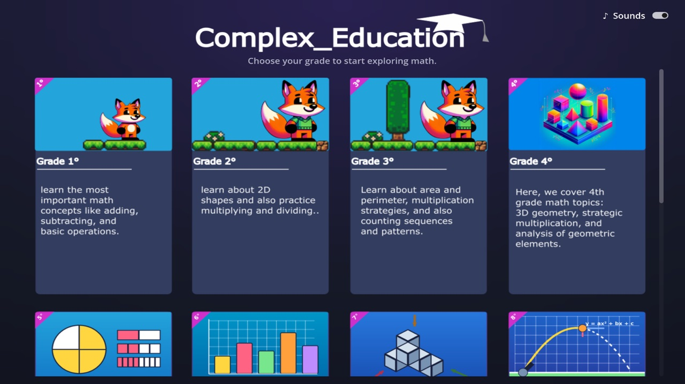

Simulaciones en 3D
Aviones, tanques y objetos reales para ver la matemática en acción. La cámara gira alrededor de cada objeto para mirarlo desde cualquier ángulo.
Simulaciones 3D, ecuaciones claras y clases listas para proyectar. Un programa hecho para el aula que funciona en el computador de cada docente, con o sin internet.
Para docentes del colegio · Entra con el usuario que le da el administrador

Pensado con docentes: menos tiempo preparando, más tiempo enseñando y estudiantes que entienden lo que ven.
Aviones, tanques y objetos reales para ver la matemática en acción. La cámara gira alrededor de cada objeto para mirarlo desde cualquier ángulo.
Fracciones, raíces y fórmulas escritas con calidad de texto escolar, grandes y legibles desde el fondo del salón.
El docente explica, los estudiantes practican y luego pasan al tablero en grupos con un reloj sonoro. La clase completa, ya organizada.
Solo necesita conexión la primera vez que entra. Después trabaja hasta 14 días sin internet, ideal para salones con mala señal.
Usa el hardware del propio computador y ajusta la calidad gráfica sola, así funciona bien también en portátiles modestos.
Las versiones nuevas se descargan mientras usted trabaja, sin interrumpir. Cuando están listas, el programa le pregunta si desea instalarlas.
Cada docente entra con su propio usuario y contraseña. El administrador crea, desactiva o cambia cuentas desde el mismo programa.
Diagramas de tallo y hoja, balanzas para la media y gráficos de puntos que los estudiantes mueven y construyen ellos mismos.
Cada ejercicio tiene pistas opcionales y una solución explicada que el docente muestra cuando el grupo termina.
Pantallas limpias, letra grande y controles simples. Los paneles de cálculos se pueden esconder o mostrar cuando el docente quiera.

Los estudiantes calculan, predicen y comprueban el resultado viendo la simulación. Modelos 3D cuidados, sombras, cielo y paisaje.

En la balanza, la media es el punto donde la barra queda nivelada. Los estudiantes mueven los datos y ven al instante cómo cambian la media y la mediana.

Arqueros, tiros libres, temperaturas de ciudades, vuelos de aviones de papel. Cada tema parte de una situación que los estudiantes reconocen.
La misma estructura en todos los temas, para que docentes y estudiantes sepan siempre qué sigue.

Diapositivas de lo fácil a lo difícil, con definiciones destacadas y ejemplos paso a paso.
Actividades interactivas con pistas opcionales y verificación inmediata.

Grupos de 5 pasan al tablero con un reloj de 3 minutos que suena y acelera al final.

Elija el grado, luego el tema. Cada nuevo módulo llega a todos los docentes con las actualizaciones automáticas.
Misiones de un avión de carga para operar con distancias y pesos.
Conducir hacia los objetivos usando coordenadas y ecuaciones.
Máquinas que esconden una regla: predecir, comparar y descubrirla.
Diagramas de tallo y hoja: ordenar datos, moda, mediana y rango.
Medidas de tendencia central con balanzas y datos que se mueven.
Rango, cuartiles, diagramas de caja, datos atípicos y desviación.
Gratis para los docentes del colegio. Para entrar use el usuario y la contraseña que le entregó el administrador.
Elija la versión de su computador.
Descargar¿No sabe qué chip tiene su Mac? Menú → Acerca de esta Mac. Si dice «Chip Apple M1, M2, M3…» use la versión con chip Apple; si dice «Procesador Intel», la versión Intel.
.zip descargado y saque Complex_Education.exe a su Escritorio..zip descargado y arrastre Complex Education a la carpeta Aplicaciones.Cuando haya una versión nueva, el programa la descarga solo mientras lo usa y le pregunta si desea instalarla. No necesita volver a esta página.
Los entrega el administrador del programa en el colegio. Si olvidó su contraseña, pídale que le asigne una nueva; él lo puede hacer desde el mismo programa.
Solo la primera vez que entra con su usuario. Después el programa funciona sin conexión hasta 14 días; cuando vuelva a tener internet se renueva solo.
Sí. El programa usa el hardware de su equipo y ajusta la calidad gráfica automáticamente. En las escenas 3D también puede elegir la calidad Baja manualmente.
Automáticamente. Cuando hay una versión nueva, se descarga mientras usa el programa y al terminar le pregunta si desea instalarla. Si elige «Más tarde», se lo vuelve a preguntar la próxima vez.
Sí. Es el aviso normal para programas que no vienen de una tienda de aplicaciones. Siga los pasos de «Cómo abrirlo la primera vez» y solo tendrá que hacerlo una vez.
Sí, está pensado para proyectarse: letra grande, alto contraste y paneles que se pueden esconder para dejar más espacio a la simulación.